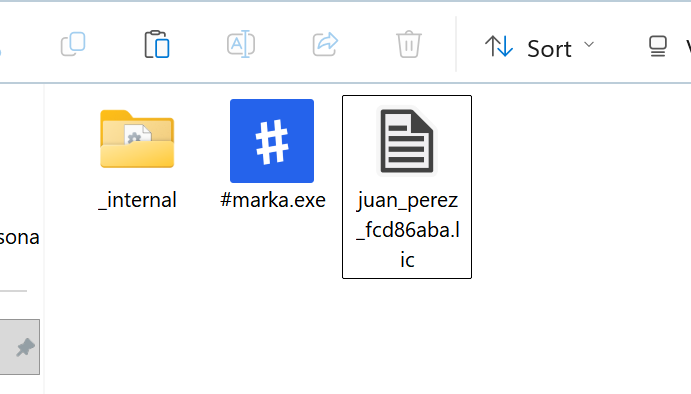
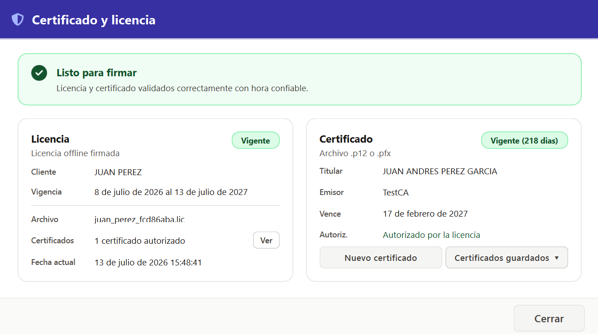
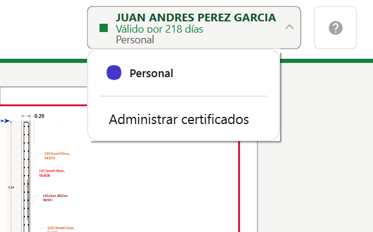
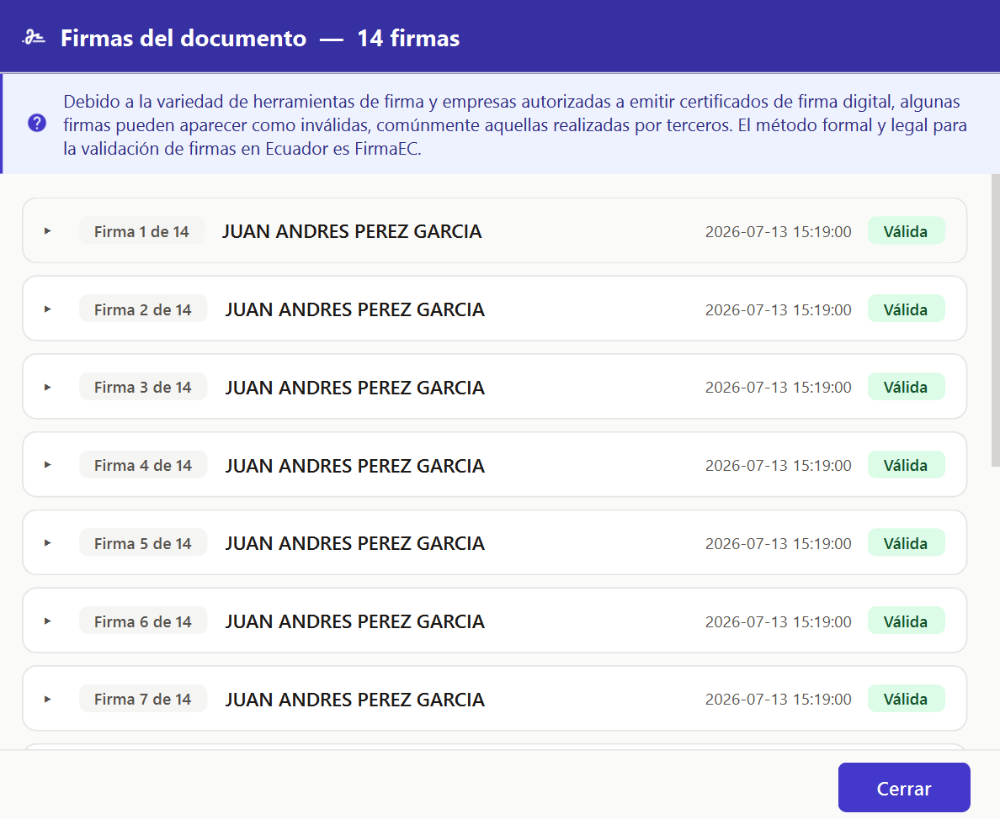
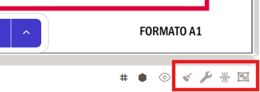
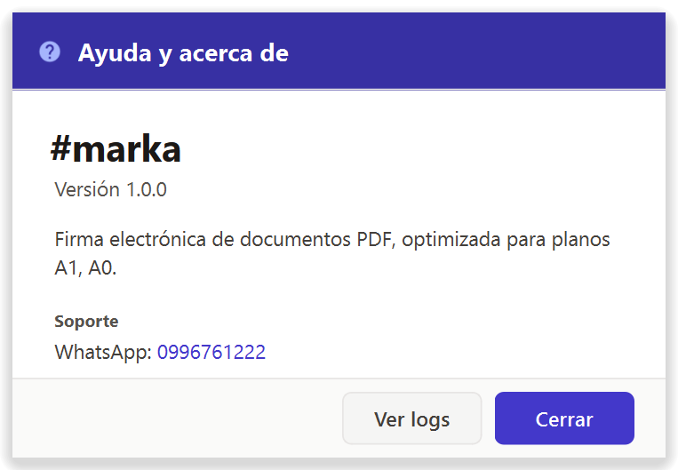

Guía de usuario de PyFirmaEC
Firme documentos PDF con su certificado digital. Esta guía explica, paso a paso, cómo utilizar cada función de la aplicación.
Introducción
PyFirmaEC es una aplicación de escritorio para firmar electrónicamente documentos PDF, incluido los planos de gran tamaño (formatos A0 y A1). Cada firma añade un sello con un código QR que permite verificarla.
Necesita dos cosas para empezar: un certificado digital (archivo .p12 o .pfx) y una licencia (archivo .lic).
Primeros pasos
Activar la licencia
Coloque el archivo de licencia (.lic, por ejemplo juan_perez_f15978c5.lic) en la misma carpeta donde está el ejecutable (marka.exe), al mismo nivel, no dentro de una subcarpeta. La aplicación lo detecta automáticamente al abrirse. Si ya estaba en ejecución, ciérrela y vuelva a abrirla. Si la licencia no está en esa ubicación, la aplicación le solicitará el archivo o mostrará un aviso de activación.

Configurar el certificado
La primera vez que abra el programa, se mostrará solo el panel de Certificado y licencia. Ahí carga su certificado y contraseña.
- Haga clic en Nuevo certificado y seleccione su archivo
.p12/.pfx(también puede arrastrarlo a la zona indicada). - Escriba la contraseña del certificado. Puede pulsar el icono del ojo para ver lo que escribe.
- Opcionalmente, escribe un alias para reconocer este certificado más tarde (por ejemplo, "Personal" o "Empresa").
- Pulsa Aplicar certificado.
.p12 o .pfx. La aplicación solo reconoce esas extensiones; si el archivo tiene otro nombre (por ejemplo, sin extensión o con .cer), no aparecerá en el selector.
.p12, escribe la contraseña y pulsa "Aplicar certificado"..p12, escribir la contraseña y pulsar "Aplicar".Cambiar o elegir certificado
Arriba a la derecha verá el botón del certificado. Muestra un punto de color, el nombre del firmante, los días de vigencia y el alias. Púlselo para abrir un desplegable donde puede:
- Ver la lista de certificados guardados (el activo tiene un indicador). Haga clic en otro para cambiarlo al instante.
- Abrir "Administrar certificados", que muestra el diálogo completo: aquí puede cargar uno nuevo, ver la contraseña y, en el menú Certificados guardados, pulsar la × para eliminar uno.
El punto de color indica el estado del certificado activo: gris (sin certificado), verde (vigente), naranja (por vencer) o rojo (vencido / no autorizado).

Cargar documentos
Puede agregar los PDF que desee firmar de varias formas:
- Arrastrar y soltar sobre el visor: arrastre uno o varios PDF directamente sobre el área de visualización (funciona tanto con la ventana vacía como con un documento ya abierto).
- Arrastrar a la zona de carga del panel: suelta los PDF en la franja superior del panel lateral.
- Botón "Seleccionar archivos PDF": aparece en el visor vacío y también en la zona de carga lateral; abre un diálogo para elegir uno o varios archivos.
Cada documento aparece como una tarjeta en el panel lateral, con su miniatura, número de páginas, tamaño y formato de hoja detectado (A4, A3, A0, etc.).
Desde las tarjetas puede:
- Hacer clic para abrir el documento en el visor.
- Arrastrar una tarjeta para reordenar la lista.
- Pulsar la papelera para eliminar un documento.
- Con clic derecho, "Abrir ubicación del archivo" para verlo en su carpeta.
El botón Limpiar lista borra todos los documentos de la lista.
Ver y navegar el PDF
Cuando abre un documento, se muestra en el visor principal. Puede:
- Acercar / alejar con los botones
+/−, manteniendo Ctrl y moviendo la rueda del ratón, o pulsando el botón de ajuste a página. - Pasar de página con las flechas (primero / anterior / siguiente / último) o escribiendo el número en el cuadro central.
- Ver el nombre y tamaño del archivo en la barra inferior.
Con clic derecho sobre el visor se abre un menú rápido con dos opciones: "Centrar y zoom en firma" (lleva el sello al centro y lo amplía) y "Restablecer zoom 100%" (vuelve al tamaño real).
Los planos muy grandes (A0, A1) se manejan sin problema; al firmar, utilice el botón de zoom a la firma para ver bien el sello.
Colocar la firma
Sobre el documento aparece un sello de firma (una previsualización del aspecto final). Para colocarlo:
- Arrástralo con el ratón a la posición deseada, o
- Haga clic en cualquier punto del documento para colocarlo ahí.
Al soltarlo, el sello se bloquea automáticamente y aparece el botón Firmar. Si desea moverlo de nuevo, arrástrelo y se volverá a bloquear al soltar.
Ayudas para colocar con precisión —cada una tiene un botón en la barra de información (la franja inferior del visor) y su atajo de teclado:
- Cuadrícula (G): botón de rejilla en la barra de información; muestra una cuadrícula sobre el documento.
- Ajuste a cuadrícula (S): botón de ajuste en la barra de información; el sello "encaja" suavemente al moverlo.
- Mostrar / ocultar sello (H): botón de ojo en la barra de información; ocúltelo si tapa lo que necesita leer.
También puede posicionar el sello con el menú contextual del visor (clic derecho → "Centrar y zoom en firma").
Plantillas de posición
Si siempre firma en el mismo lugar (por ejemplo, la esquina inferior derecha de un A4), puede guardar esa posición para no repetirlo.
- Coloque el sello donde desee.
- Pulsa Posiciones (abajo a la izquierda del visor).
- En "Guardar posición actual…", escribe un nombre (ej. "Esquina inferior derecha") y guárdala.
La posición que utilice al firmar se guarda sola como "Última posición usada", así que la próxima vez que abra ese mismo formato reaparecerá ahí.
Las posiciones se guardan por tamaño de hoja y orientación (A4 vertical, A3 horizontal, etc.). Puede marcar una como predeterminada tocando la estrella ★: así, al abrir ese formato, el sello aparecerá solo en ese lugar. La estrella ☆ indica que no es la predeterminada. Para borrar una plantilla, pulse la × a su lado.
Firmar el documento
Con el sello colocado, seleccione un modo de firma desde el menú desplegable del botón Firmar:
| Modo | Qué hace |
|---|---|
| Todas las páginas | Firma automáticamente todas las páginas en la misma posición. |
| Esta página | Firma solo la página que estás viendo. |
| Validar firmas | Revise las firmas existentes (ver sección Validar firmas). |
- Coloque el sello de firma.
- Seleccione el modo en el botón Firmar.
- Pulsa Firmar y espera la barra de progreso.
- Al terminar, se abre el documento ya firmado. El archivo original no se borra; se crea uno nuevo con
-firmadoen el nombre.
Validar firmas existentes
Para comprobar si un PDF ya firmado es válido, seleccione el modo Validar firmas en el botón Firmar (o úselo desde la lista de firmas). La aplicación analiza cada firma y muestra el resultado. Al terminar, el botón "Ver lista de firmas" abre el panel de detalle.
En el panel de detalle verá, por cada firma:
- Firmante y fecha.
- Estado: Válida, Modificada o Inválida.
- Datos del certificado (emisor, vigencia) y, si existe, el sello de tiempo (TSA).

Compartir el documento
Para enviar un documento por otra aplicación (por ejemplo, WhatsApp o su cliente de correo) sin tener que buscarlo en el explorador de archivos, arrastre su tarjeta desde el panel lateral directamente a la otra ventana.
La aplicación pasa el archivo real (el PDF, o el -firmado si ya lo firmó), así que la otra app lo recibe igual que si lo hubiera adjuntado desde el explorador. Funciona con cualquier programa que acepte soltar un archivo.
Herramientas de PDF
En la barra de información (franja inferior del visor) hay cuatro utilidades, cada una con su botón y su atajo:
| Herramienta | Botón | Atajo | Para qué sirve |
|---|---|---|---|
| Corregir posición | Icono de escoba | Ctrl+N | Arregla la posición y rotación de las páginas cuando la firma sale torcida o fuera de lugar. |
| Reparar | Icono de llave inglesa | Ctrl+R | Corrige errores internos del PDF que impiden firmarlo. |
| Comprimir | Icono de compresión | Ctrl+M | Reduce el tamaño del archivo (niveles ligero, medio, alto, máximo). |
| Unir | Icono de agrupar | Ctrl+U | Combina varios PDF en uno solo. También puede unir desde una tarjeta: clic derecho → "Unir". |
Cada herramienta muestra un pequeño cuadro con el progreso y un mensaje de éxito o error. El archivo resultante se agrega a su lista y se guarda junto al original (por ejemplo, con -normalizado, -reparado o -comprimido en el nombre).

Problemas comunes
Si al trabajar con un documento algo no sale como esperas, estas son las causas frecuentes y la herramienta que las resuelve (detalle en Herramientas de PDF):
- La firma aparece torcida, girada o fuera de su posición. La página tiene rotación o posición incorrecta. Utilice Corregir posición (normalizar) para enderezarla antes de firmar.
- No se puede firmar: error de "estructura del documento". El PDF tiene errores internos. Utilice Reparar; la aplicación también se lo ofrecerá automáticamente al intentar firmar.
- El archivo pesa demasiado. Utilice Comprimir para reducir su tamaño.
- Si desea firmar varios documentos como uno solo. Utilice Unir para combinarlos.
Atajos de teclado
| Tecla | Acción |
|---|---|
| H | Mostrar / ocultar el sello de firma |
| G | Mostrar / ocultar la cuadrícula |
| S | Activar / desactivar el ajuste a cuadrícula |
| F1 | Abrir ayuda / acerca de |
| Ctrl+N | Corregir posición del PDF |
| Ctrl+R | Reparar PDF |
| Ctrl+M | Comprimir PDF |
| Ctrl+U | Unir PDFs |
| Ctrl + rueda | Zoom en el visor |
Desde el menú contextual (clic derecho) también tiene atajos sin teclado:
- En el visor: "Centrar y zoom en firma" y "Restablecer zoom 100%".
- En una tarjeta del panel: "Abrir ubicación del archivo" y "Unir".
Soporte y preguntas
¿Dudas o problemas? Escríbanos:
- WhatsApp: 0996761222
- Sitio y descargas: www.markaec.com
El botón "?" (o la tecla F1) abre el diálogo Ayuda / Acerca de: muestra la versión de la aplicación, el sitio web y el contacto de WhatsApp. Ahí mismo están los botones "WhatsApp" (abre el chat con un mensaje ya escrito), "Enviar diagnóstico a soporte" (manda la versión, el estado de la licencia y del certificado, y deja el registro completo en el portapapeles), "Guía de usuario" (abre esta guía) y "Ver logs".
